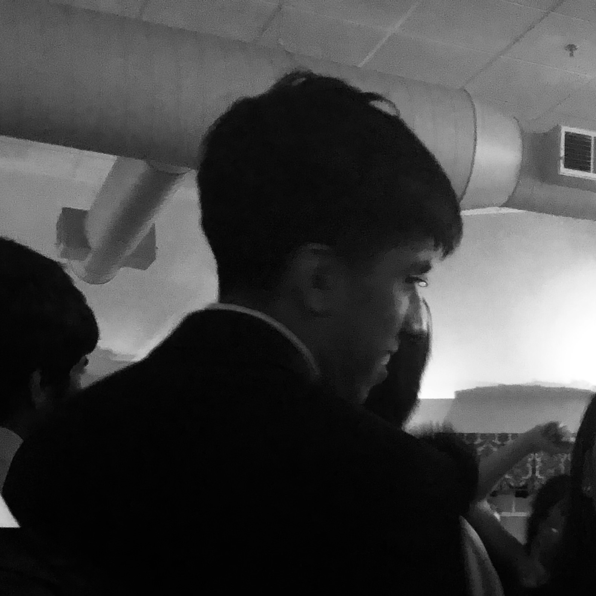
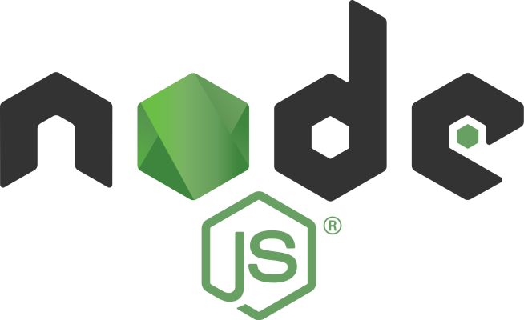
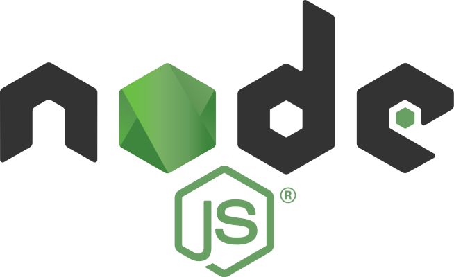
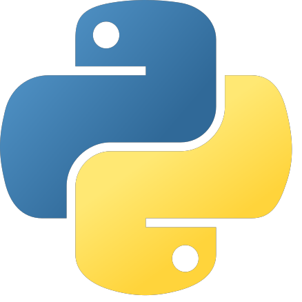
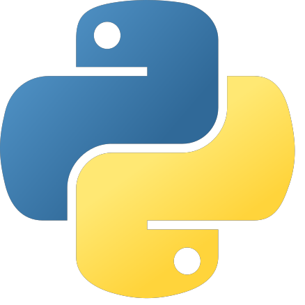

Tarun Eswar
Software Engineer, Student
Hey there, my name is Tarun Eswar and I currently attend the
Massachusetts Academy of Math & Science @ WPI. I am currently
primarily interested in Economics, Japanese, and Computer Science.
As of now, I am trying to find intersections between these topics to
deepen my understanding of each.
Aside from these interests, I can often be found creating op-eds,
journalism articles, and poetry. These passions have enabled me to
complement my interest in learning Japanese. Feel free to reach out
to me at
teswar@wpi.edu.


 


 
